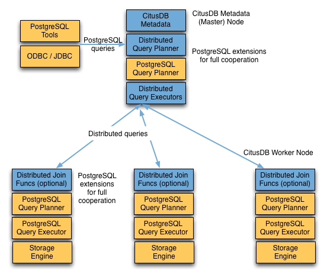

Citus Query Processing¶
A Citus cluster consists of a master instance and multiple worker instances. The data is sharded and replicated on the workers while the master stores metadata about these shards. All queries issued to the cluster are executed via the master. The master partitions the query into smaller query fragments where each query fragment can be run independently on a shard. The master then assigns the query fragments to workers, oversees their execution, merges their results, and returns the final result to the user. The query processing architecture can be described in brief by the diagram below.
Citus’s query processing pipeline involves the two components:
- Distributed Query Planner and Executor
- PostgreSQL Planner and Executor
We discuss them in greater detail in the subsequent sections.
Distributed Query Planner¶
Citus’s distributed query planner takes in a SQL query and plans it for distributed execution.
For SELECT queries, the planner first creates a plan tree of the input query and transforms it into its commutative and associative form so it can be parallelized. It also applies several optimizations to ensure that the queries are executed in a scalable manner, and that network I/O is minimized.
Next, the planner breaks the query into two parts - the master query which runs on the master and the worker query fragments which run on individual shards on the workers. The planner then assigns these query fragments to the workers such that all their resources are used efficiently. After this step, the distributed query plan is passed on to the distributed executor for execution.
The planning process for key-value lookups on the distribution column or modification queries is slightly different as they hit exactly one shard. Once the planner receives an incoming query, it needs to decide the correct shard to which the query should be routed. To do this, it extracts the distribution column in the incoming row and looks up the metadata to determine the right shard for the query. Then, the planner rewrites the SQL of that command to reference the shard table instead of the original table. This re-written plan is then passed to the distributed executor.
Distributed Query Executor¶
Citus’s distributed executors run distributed query plans and handle failures that occur during query execution. The executors connect to the workers, send the assigned tasks to them and oversee their execution. If the executor cannot assign a task to the designated worker or if a task execution fails, then the executor dynamically re-assigns the task to replicas on other workers. The executor processes only the failed query sub-tree, and not the entire query while handling failures.
Citus has 3 different executor types - real time, task tracker and router. The first two are better suited for larger SELECT queries while the router executor is useful for handling simple key-value lookups and INSERT, UPDATE, and DELETE queries. We briefly discuss the executors below.
Real-time Executor¶
The real-time executor is the default executor used by Citus. It is well suited for getting fast responses to queries involving filters, aggregations and colocated joins. The real time executor opens one connection per shard to the workers and sends all fragment queries to them. It then fetches the results from each fragment query, merges them, and gives the final results back to the user.
Since the real time executor maintains an open connection for each shard to which it sends queries, it may reach file descriptor / connection limits while dealing with high shard counts. In such cases, the real-time executor throttles on assigning more tasks to workers to avoid overwhelming them with too many tasks. One can typically increase the file descriptor limit on modern operating systems to avoid throttling, and change Citus configuration to use the real-time executor. But, that may not be ideal for efficient resource management while running complex queries. For queries that touch thousands of shards or require large table joins, you can use the task tracker executor.
Task Tracker Executor¶
The task tracker executor is well suited for long running, complex data warehousing queries. This executor opens only one connection per worker, and assigns all fragment queries to a task tracker daemon on the worker. The task tracker daemon then regularly schedules new tasks and sees through their completion. The executor on the master regularly checks with these task trackers to see if their tasks completed.
Each task tracker daemon on the workers also makes sure to execute at most citus.max_running_tasks_per_node concurrently. This concurrency limit helps in avoiding disk I/O contention when queries are not served from memory. The task tracker executor is designed to efficiently handle complex queries which require repartitioning and shuffling intermediate data among workers.
Router Executor¶
The router executor is used by Citus for handling simple key-value lookups and INSERT, UPDATE and DELETE queries. This executor assigns the incoming query to the worker which has the target shard. The query is then handled by the worker PostgreSQL server and the results are returned back to the user. In case a modification fails on a shard replica, the executor marks the corresponding shard replica as invalid in order to maintain data consistency.
PostgreSQL planner and executor¶
Once the distributed executor sends the query fragments to the workers, they are processed like regular PostgreSQL queries. The PostgreSQL planner on that worker chooses the most optimal plan for executing that query locally on the corresponding shard table. The PostgreSQL executor then runs that query and returns the query results back to the distributed executor. You can learn more about the PostgreSQL planner and executor from the PostgreSQL manual. Finally, the distributed executor passes the results to the master for final aggregation.